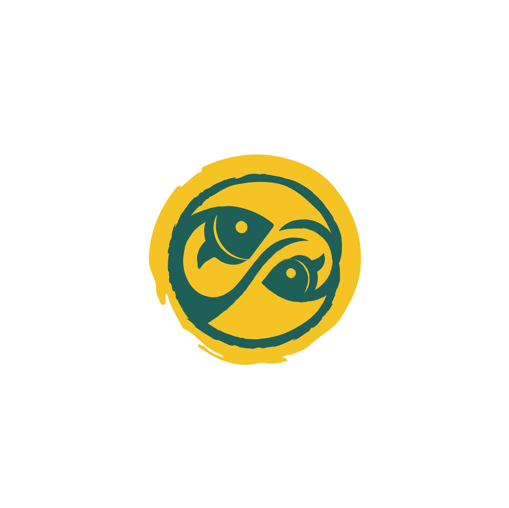

Strategic market linkage consultant — East Africa
Across East Africa, farming communities with quality produce often have no route to the buyers who need it. Pushan changes that — not by trading, but by connecting. We build the bridge. You walk across it.

Most market intermediaries make their money on the transaction — buying low, selling high. Pushan is built on a different principle entirely.
Pushan charges a consultancy fee for the linkage we create — not a margin on the goods or credits traded.
Once buyer and seller are connected, the transaction is entirely theirs. The full value stays between the two parties.
Communities deserve to trade on their own terms. Our role is simply to make sure they have someone to trade with.
Whether you grow food or steward land, Pushan connects you to markets that recognise what you produce.
Connecting farming groups and cooperatives to verified buyers across East Africa's agricultural commodities — directly, fairly, and without taking a cut of the trade.
Farming communities across East Africa are already stewarding land that sequesters carbon. Pushan links those communities to the programmes and buyers that reward that work.
Clear, transparent, and designed so you are never dependent on us once the link is made.
We start by understanding your produce, your capacity, your community, and what a good market looks like for you. No two groups are the same.
Using our network across East Africa, we identify verified buyers or sellers whose needs align with yours — in volume, quality, certification, and timing.
We facilitate the introduction, support the early stages of the relationship, and step back. The ongoing trade is yours. That is the Pushan model.
BushBucks Coffee is a specialty coffee brand built on Ugandan beans — hand-picked, artisan-roasted, and traceable from farm to cup.
It exists because the right connections were made between farming communities and a market ready to receive them. BushBucks is a sister brand to Pushan, founded by the same person.
It is not a case study from a brochure — it is a live, working example of what market linkage looks like when it works. Farmers connected to buyers, directly. Trade that creates real value at the source.
"The land has always held value. We help communities find the markets that recognise it."Visit BushBucks Coffee →
Pushan works with both ends of the market — those who grow and those who buy. Both need each other. We make the introduction.
You have organised production and reliable supply. You need a buyer who can take your volume consistently and at a fair price — without going through layers of intermediaries who eat your margin.
Find a market for your produceYou need a traceable, verified source of supply. You want a direct relationship with producers — not another trader in the chain. Pushan finds you the source and steps aside.
Find a supply sourceWhether you are a cooperative with produce and no clear path to buyers, or a buyer looking for a reliable direct source of supply — we want to hear from you.
Tell us where you are and what you need. We will tell you honestly whether we can help, and how.
Or reach us directly
hello@pushanenterprise.com